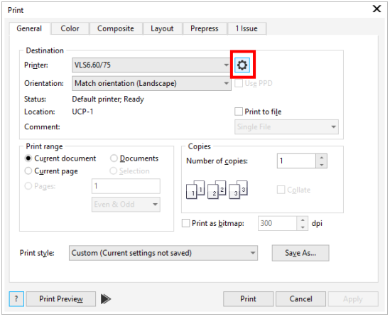
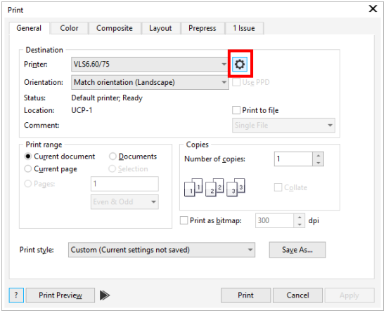

 

From the online quiz for laser cutting to the competency test, it is a different experience as you have to be really hands-on👐to really know how laser cutting works but in online e packages it is kinda tough😢. Mr. Louis taught me the shortcut to know whether my object is within cutting range✂️ during the competency test. This laser cutting takes practice🤔 to master the whole laser cutting software and how to utilize it. I feel nervous😟 and sleepy😴 at the same time during the competency test. I thought that I will be the last one to go in for the test and it will be difficult😓 even if I go through the video. Therefore I stop reading my SOP during the test itself and when it was my turn I went in without my SOP but I was confident😃 enough to finish it without any help given🙅‍♀️. I was able to print out my work out and I was proud of myself 😇that I did well within 2 minutes🤩. For my next laser cutting, I will try to master🤫 what I can before the actual class and be able to perform better. One thing about myself🧐, I tend to stress myself😱🤯 a lot so this time I will go with the flow instead of stressing myself out🙂. Nevertheless, I have fun🤪 with the laser cutting competency test. Below is the final product of my competency testğŸ¤: